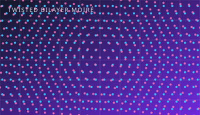
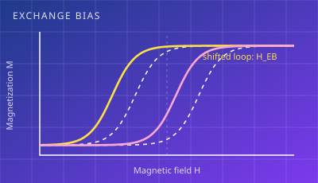
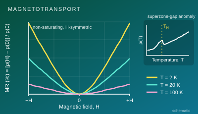
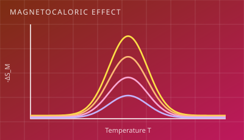
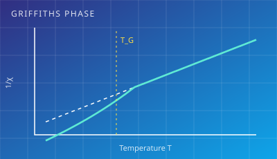
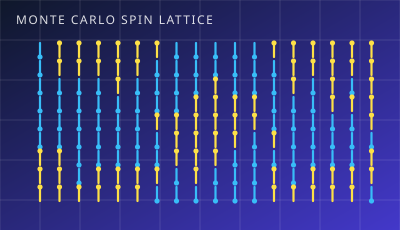

2026
Coexistence of Griffiths phase and superparamagnetic-like behavior in La-doped antiferromagnetic CaMnO3
K. Pal*, S. Ghosh, N. N. S. V. Rama Raju, C. Prasad, K. Das, I. Das
Materials Science and Engineering: B 335, 119875 (2026) DOI ↗
Experimental condensed-matter physicist developing 2D van der Waals quantum materials and twisted heterostructures, from crystal growth and device fabrication to low-temperature transport and magneto-optical characterization.
I am an experimental condensed-matter physicist working at the interface of 2D quantum materials, magnetism and electronic transport. My current research spans CVD/CVT crystal growth, exfoliation and deterministic stacking of van der Waals heterostructures and twisted bilayers, device fabrication, electrical transport, and magneto-optical Kerr-effect measurements.
My Ph.D. research at the Saha Institute of Nuclear Physics focused on exchange bias and magnetotransport across perovskite oxides, rare-earth intermetallics and sputtered thin-film multilayers. The work combined materials synthesis, XRD/XRR/TEM, low-temperature SQUID and PPMS measurements, and Monte Carlo modelling, and received the Best Thesis Award 2024.

Schematic illustrations of the physics behind my work.
CVD/CVT growth, exfoliation, flake transfer and stacking of heterostructures and twisted bilayers; moiré physics and device fabrication.

Giant exchange bias in perovskite oxides, spin-compensated systems and sputtered multilayers, supported by Monte Carlo theory.

Extraordinary and giant magnetoresistance in rare-earth aluminides such as GdFe2Al10 and DyFe2Al10.

Ionic engineering and protocols for boosting magnetic entropy change and relative cooling power.

Disorder-driven Griffiths-like phases and charge localization in double perovskites and doped manganites.

Monte Carlo modelling, Python/Fortran analysis tools and LabVIEW instrument control.
Click a title or its DOI button to open the paper on the publisher site. * Corresponding author.
K. Pal*, S. Ghosh, N. N. S. V. Rama Raju, C. Prasad, K. Das, I. Das
Materials Science and Engineering: B 335, 119875 (2026) DOI ↗
B. Esmaeilzadeh*, Z. R. Usha, H. Chamkouri, S. Li, K. Pal, D. Wu
Optics & Laser Technology 204, 116592 (2026) DOI ↗
H. Zhou*, K. Pal
Photonics 13, 579 (2026) DOI ↗
K. Pal*, S. Ghosh, I. Das
J. Phys. Chem. C 130, 6416–6423 (2026) DOI ↗
A. Karikar, K. Pal*, K. Das, K. Pradhan, B. Satpati, I. Das
Materials Research Bulletin 198, 114021 (2026) DOI ↗
A. Ahmed, K. Pal*, I. Das
Inorg. Chem. Commun. 179, 114760 (2025) DOI ↗
K. Pal*, S. Mandal, S. Dey, K. Pradhan, I. Das
Materials Today Communications 46, 112814 (2025) DOI ↗
K. Pal*, S. Dey, A. Alam, I. Das
Scientific Reports 14, 30678 (2024) DOI ↗
K. Pal*, S. Dey, I. Das
J. Mater. Chem. C 12, 14936–14943 (2024) DOI ↗
K. Pal*, S. Mandal, I. Das
Acta Materialia 278, 120276 (2024) DOI ↗
K. Pal*, I. Das
Applied Materials Today 39, 102316 (2024) DOI ↗
K. Pal*, S. Dey, I. Das
J. Phys.: Condens. Matter 36, 215802 (2024) DOI ↗
K. Pal*, I. Das
Thin Solid Films 790, 140211 (2024) DOI ↗
K. Pal*, I. Das
J. Alloys Compd. 960, 170794 (2023) DOI ↗
CVD/CVT-grown 2D quantum materials, van der Waals heterostructures and twisted bilayers. AFM, MFM, EDS, TEM and Raman characterization; device fabrication; electrical transport; MOKE.
Taught Engineering Physics and Physics Laboratory to first-year B.Tech. students, including course planning, assessment and lab demonstration.
Completed and published doctoral outcomes, handled peer-review responses and finished remaining experiments.
Thesis: Investigation of Exchange Bias and Magnetotransport in Bulk and Thin Films Materials.
Interested in collaboration on 2D magnets, exchange bias or magnetotransport? I would be glad to hear from you.
Spin X Institute, South China University of Technology, Panyu District, Guangzhou, Guangdong 511442, China